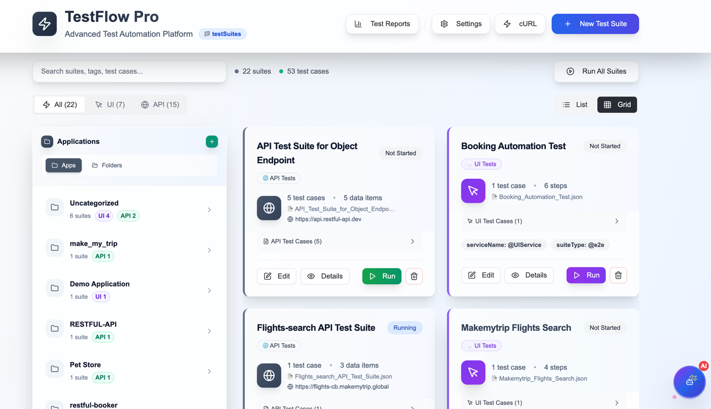
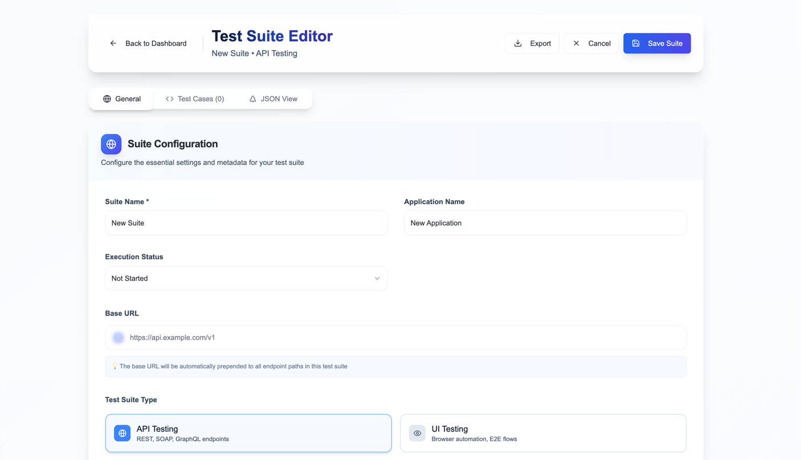
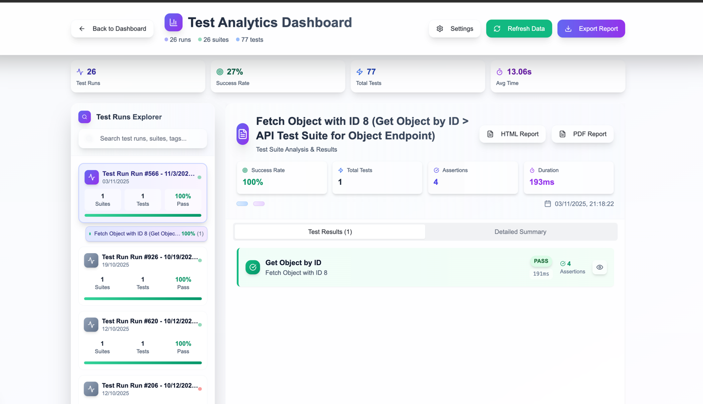
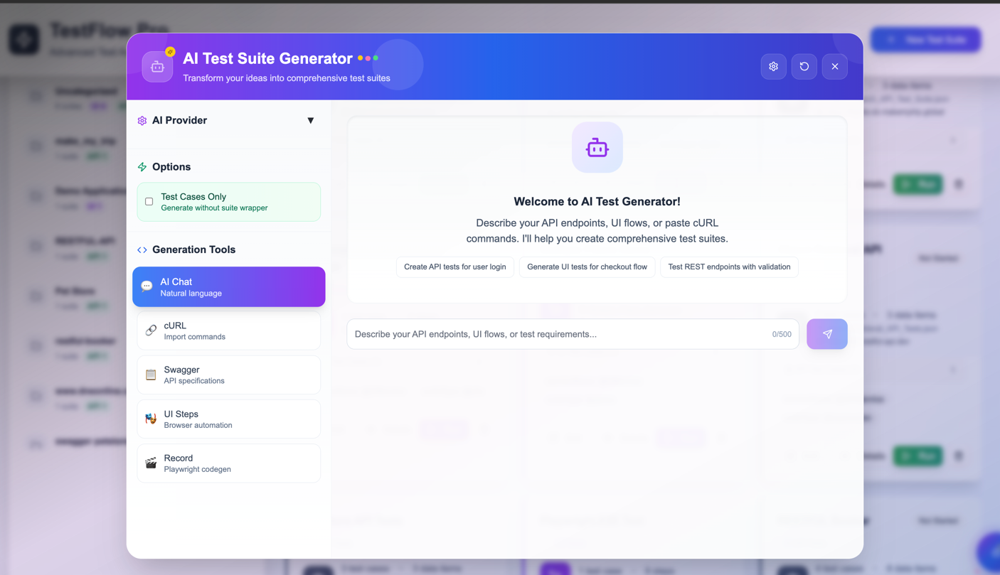

A powerful and flexible API & UI test automation framework built with TypeScript, supporting REST, SOAP, UI, and Database testing using JSON-driven test cases.
A comprehensive test automation solution for modern applications
TestFlow Pro is a next-generation test automation framework designed for teams who want to build scalable, maintainable, and powerful test suites without writing extensive code. With its keyword-driven approach and JSON-based test authoring, you can create comprehensive test scenarios for APIs, web applications, and databases.
Whether you're testing REST APIs, SOAP services, web interfaces with Playwright, or validating database operations, TestFlow Pro provides a unified platform with rich features like variable storage, data-driven testing, schema validation, and comprehensive reporting.
Built for speed, flexibility, and developer happiness
Create tests using JSON without writing complex code
Parallel test execution for faster feedback
REST, SOAP, UI, and Database testing in one framework
Execute tests with multiple data sets effortlessly
HTML and JSON reports with detailed insights
Visual test designer with React-based interface
Import from cURL, Swagger, Postman, Bruno
GitHub Actions and Azure DevOps workflows included
Generate tests using natural language with AI assistant
Everything you need for comprehensive test automation
Write tests using simple JSON keywords. No programming required for basic test scenarios.
Store response values and use them in subsequent requests. Perfect for complex workflows.
Generate fake data with Faker.js, execute database queries, and run custom functions.
20+ assertion types including JSONPath, regex, array matching, and schema validation.
Full support for RESTful APIs and SOAP web services with XML validation.
Browser automation with multiple locator strategies and custom step support.
Query MySQL, ODBC, and DB2 databases directly in your tests.
Validate API responses against JSON schemas inline or from files.
Organize tests with tags and run specific subsets via CLI filters.
Run multiple test suites in parallel for faster feedback cycles.
Generate tests using natural language, cURL, or Swagger with AI assistance.
Convert cURL commands, Swagger specs, Postman, and Bruno collections.
React-based UI for creating, editing, and running tests visually.
Watch our demo videos to see TestFlow Pro in action
Learn the basics of TestFlow Pro, including installation, creating your first test, and running it.
Watch Part 1Explore advanced features like variable chaining, data-driven testing, and UI automation.
Watch Part 2Modern, intuitive interface for test management




Get up and running in 5 minutes
npm install
cat > .env << EOF BASE_URL=https://api.example.com PARALLEL_THREADS=4 HEADLESS=true EOF
npx ts-node src/runner.ts --file="./testSuites/sample-test.json"
npm run report:html
Perfect for various testing scenarios
Test REST and SOAP APIs with comprehensive validation, authentication, and schema checking.
Combine API and UI tests to validate complete user workflows across your application.
Maintain test suites that run automatically on every code change to catch regressions early.
Quick validation of critical functionality after deployments using tagged test suites.
Query databases to validate data integrity and use results in your API/UI tests.
Test authentication flows, authorization, and data encryption across your services.
Join teams using TestFlow Pro for reliable, scalable test automation